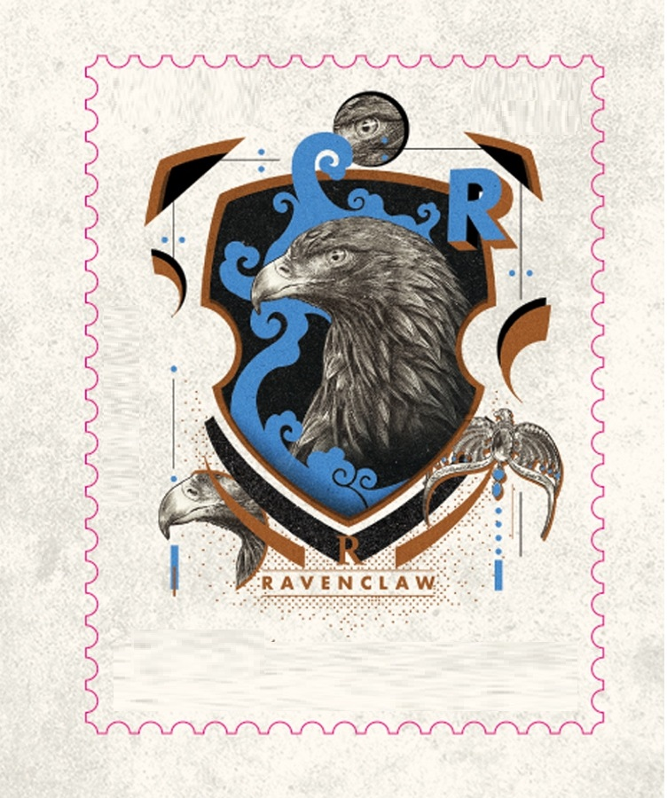

Personagens Principais
História Corvinal
Nome em inglês: Ravenclaw
Criador por: Rowena Ravenclaw
Animal símbolo: Águia
Fantasma: Dama Cinzenta (Helena Ravenclaw)
Membros mais conhecidos são: Luna Lovegood, Sibila Trelawaney, Cho Chabg, Gilderoy Lockhart, Fílio Flitwick, Garrick Olivaras e outros.
História: Os bruxos pertencentes à Corvinal se destacam por sua exímia inteligência. Nesse contexto, suas principais características são relacionadas a sabedoria, criatividade e personalidade única, o que garante a eles certa excentricidade. Contudo, a valorização exacerbada do academicismo pode torná-los perfeccionistas, frios, insensíveis e demasiadamente críticos em relação às outras Casas.